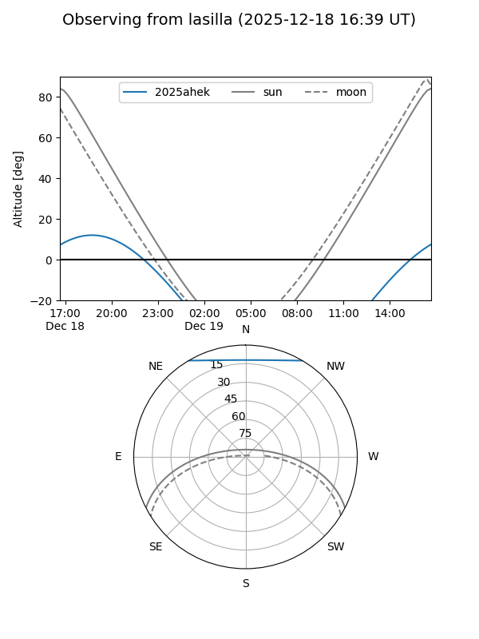
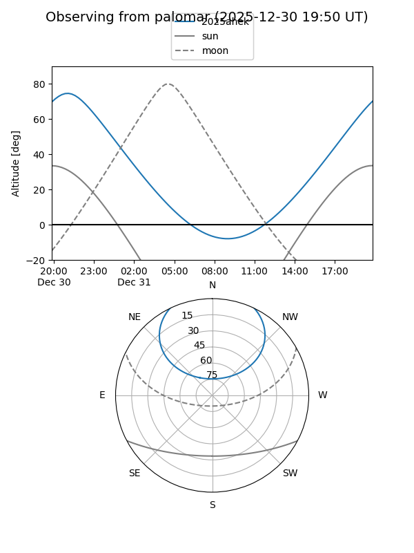

2025ahek
Target 2025ahek at 2025-12-31 16:59
Aliases and brokers:
FINK:
Lasair:
ALeRCE:
TNS:
YSE:
alt names
ZTF25achdvol (ztf,fink_ztf)
2025ahek (tns,yse)
Coordinates:
equatorial (ra, dec) = 297.7804,+48.62475
equatorial (HMS+DMS) = 19:51:07.29,+48:37:29.08
galactic (l, b) = (82.3420,+10.99349)
Flags:
Photometry:
last ztfg=16.56
2 ztfg detections
Lightcurve

Visibility


Additional plots